Visualization
Here you'll find some animations and pictures of mathematical objects I've made in some of my free time. Most of them are either from projects in which I experimented with four-dimensional rotations and stereographic projection, or animations of the action of the projective group on an affine patch. All of these were made in Mathematica.
Rotating Cube (Non-Generic)
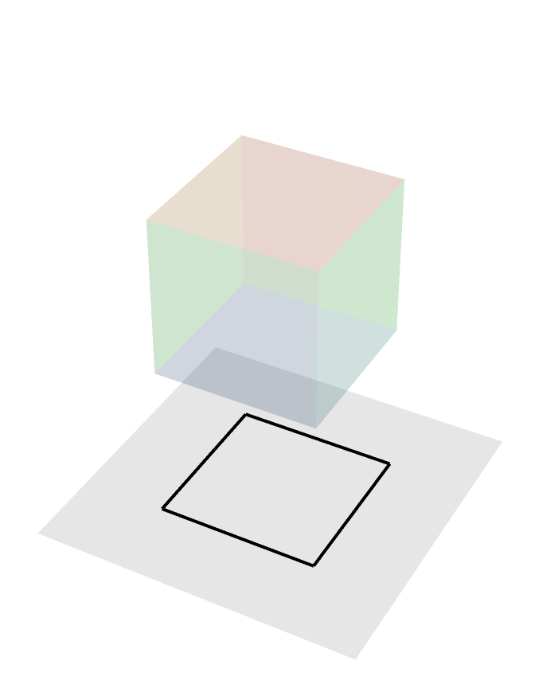
Here is a rotating cube in non-generic position being orthogonally projected onto a plane, non-generic here meaning that there are faces of this cube constantly being projected to lines in the plane. In particular, the two faces perpendicular to the axis of rotation are being projected to two black line segments.
Rotating Cube (Generic)
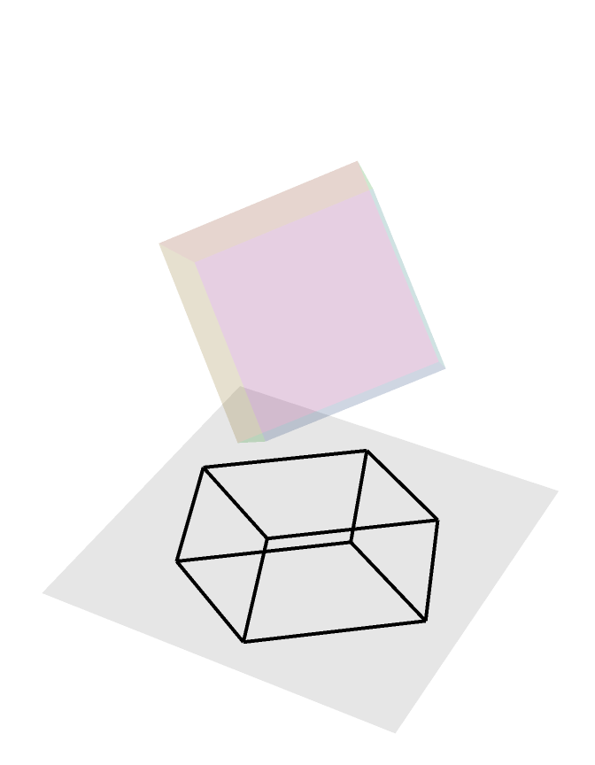
Here is a rotating cube in generic position being orthogonally projected onto a plane. The fact that the cube is in a generic position provides us a much better picture of the cube when projected onto the plane.
Perspective Projection
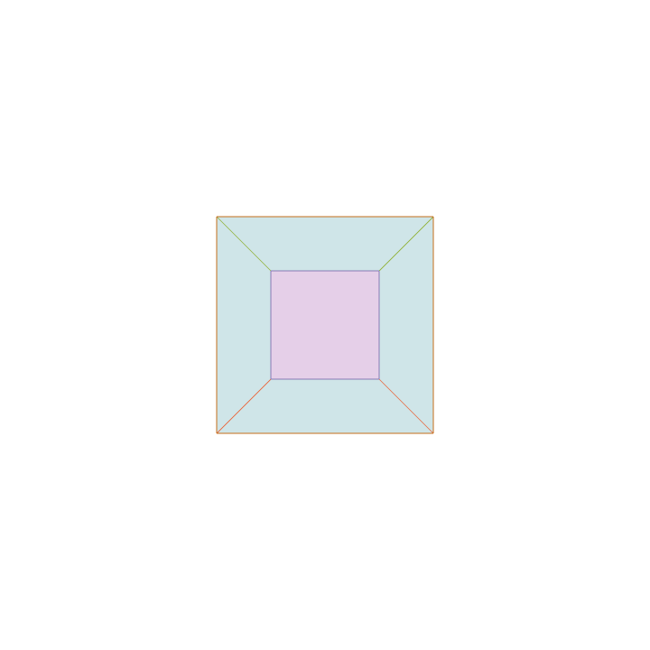
Here is a perspective projection of a rotating cube onto a plane. This projection can be imagined like a movie-theater projection. The movie projector shoots out beams of light that hit the rotating cube, and these light rays intersect the film screen.
The Actual Projection
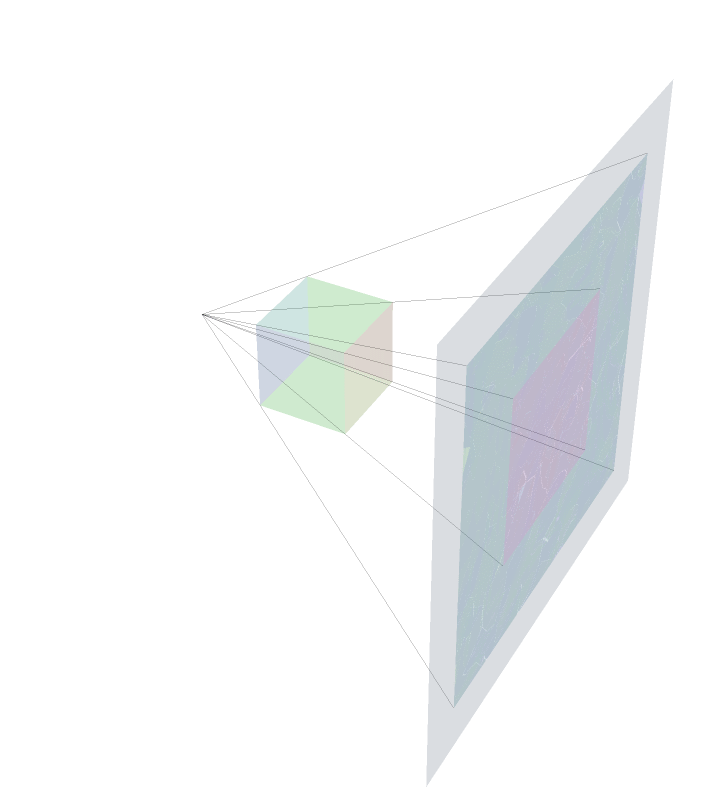
This is an animation depicting what was described in the previous panel. The rays of “light” emanating from the “movie-theater projector” are depicted as the black lines hitting the plane of projection.
Stereographic Projection
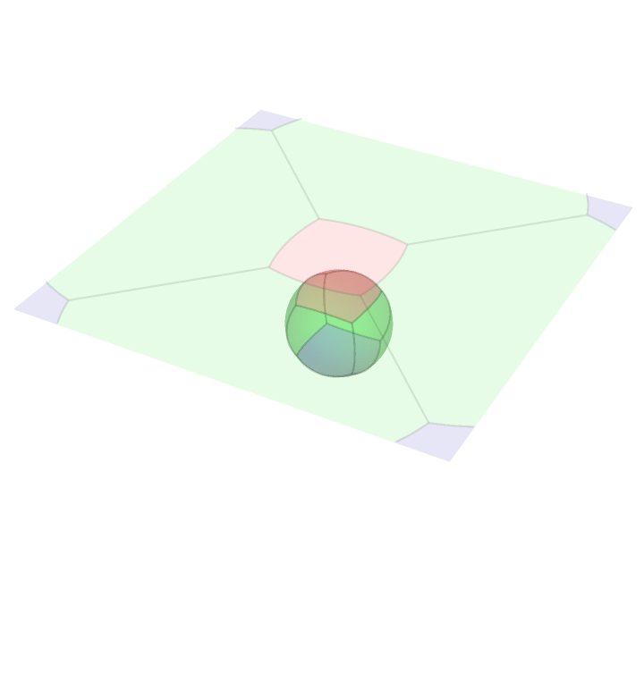
Here is an animation of a cube projected onto the surface of a sphere and then stereographically projected onto a plane. The light source here is the south pole of the sphere. Consequently, the face containing the south pole is projected to a non-compact subset of the plane.
4D Projection (Non-Generic)
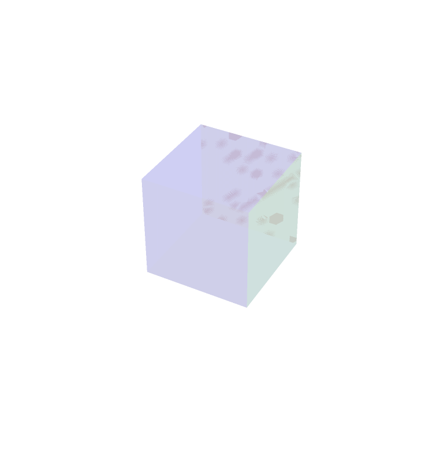
Here is an orthogonal projection of a rotating four-dimensional cube onto a three-dimensional hyperplane. The four-dimensional cube is made of three-dimensional “faces,” and the cube is in non-generic position much like the first animation. Some three-dimensional faces are projected to two-dimensional squares throughout the animation.
4D Projection (Generic)
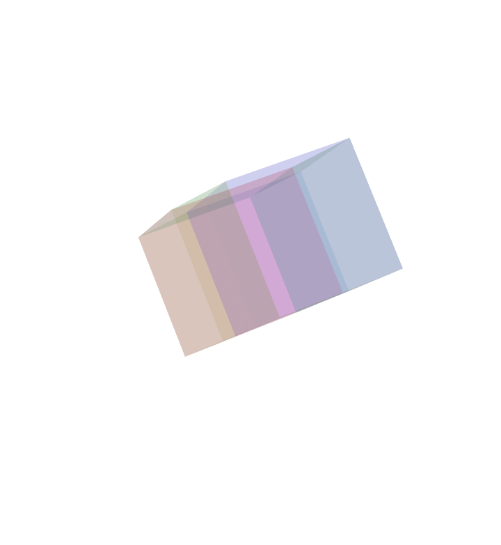
Here is an orthogonal projection of a rotating four-dimensional cube onto a three-dimensional hyperplane, but in generic position. No three-dimensional face is constantly projected to a two-dimensional square. This animation is analogous to the second animation in the first row.
4D Perspective Projection
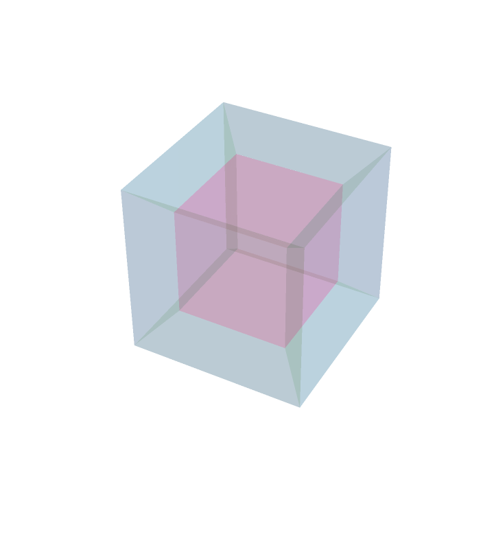
This is a perspective projection of a rotating four-dimensional cube onto a three-dimensional “screen.” Here it is easier to see the eight three-dimensional faces that make up the four-dimensional cube. While it may seem as though the red cube sits inside the blue cube, or vice versa, this is an illusion of perspective projection.
Double Rotation
This is an animation of a four-dimensional cube undergoing two simultaneous rotations in disjoint planes through a perspective projection. Such a double rotation is not possible in three dimensions.
4D Stereographic Projection

Similar to the stereographic projection above, we may project the faces of a rotating four-dimensional cube onto the three-sphere and then stereographically project. The outermost “bubble” is actually projected to the complement of what you see. When its outside is entirely red or blue, that bubble is projected both to the corresponding outer layer and to everything lying outside it. Thus the image of the stereographic projection is all of space.
Translations
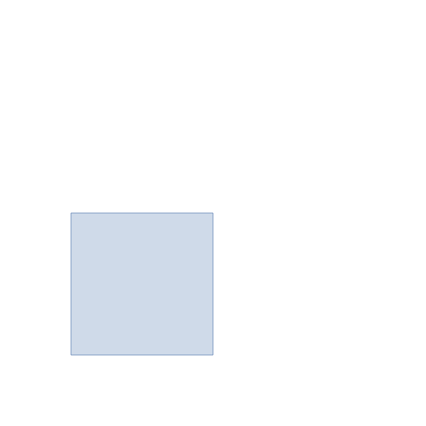
An animation of a square undergoing a sequence of translations in the plane.
Rotations
Here the square is undergoing both rotations and translations. These are the types of transformations that make up the orientation-preserving isometries of the standard Euclidean metric.
Similarities
A square undergoing similarity transformations. Unlike Euclidean isometries, the similarity group does not preserve lengths or areas, but it preserves angles. Note how the square remains a square throughout all these transformations despite its area changing.
Affine Transformations
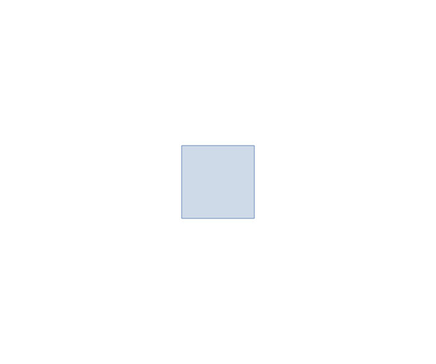
This is a square undergoing a sequence of affine transformations. Affine transformations are much more general than Euclidean isometries or similarities. They need not preserve angle, length, or area. One of the few invariants of the affine group is parallelism: parallel lines are sent to parallel lines. Note how opposite sides of the square remain parallel.
Projective Rotation
An animation of a projective rotation applied to a square living inside an affine patch of projective space. The projective plane consists of the standard affine plane compactified by points corresponding to equivalence classes of parallel lines. Note how the orientation of the square's boundary is not preserved, illustrating the topology of this space.
Hyperbolic Rotations
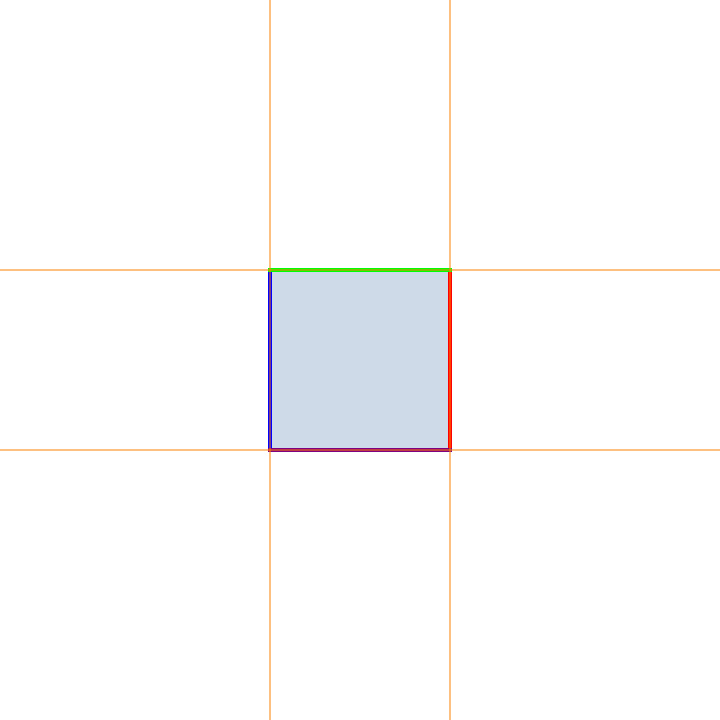
A square undergoing projective hyperbolic rotations. These maps preserve the orange lines so that one is a line of contraction and the other is a line of expansion. The expansion and contraction factors multiply to one. These are analogous to hyperbolic rotations in the Minkowski plane preserving $ds^{2}=dx^{2}-dy^{2}$.
Projective Scaling
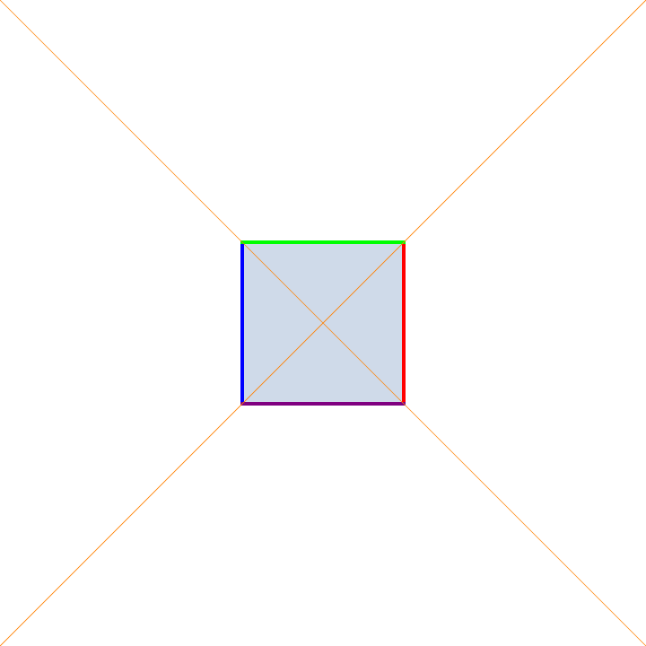
I don't know whether there is standard terminology for this, but these are projective transformations induced by matrices taking the form of the identity matrix with a scaling factor $s$ off the main diagonal. For example, a transformation taking $(x,y)$ to $(x,y)/(sy+1)$ for varying $s$ is depicted above. I call these scalings because they preserve the origin and all lines emanating radially from it.
Projectivities
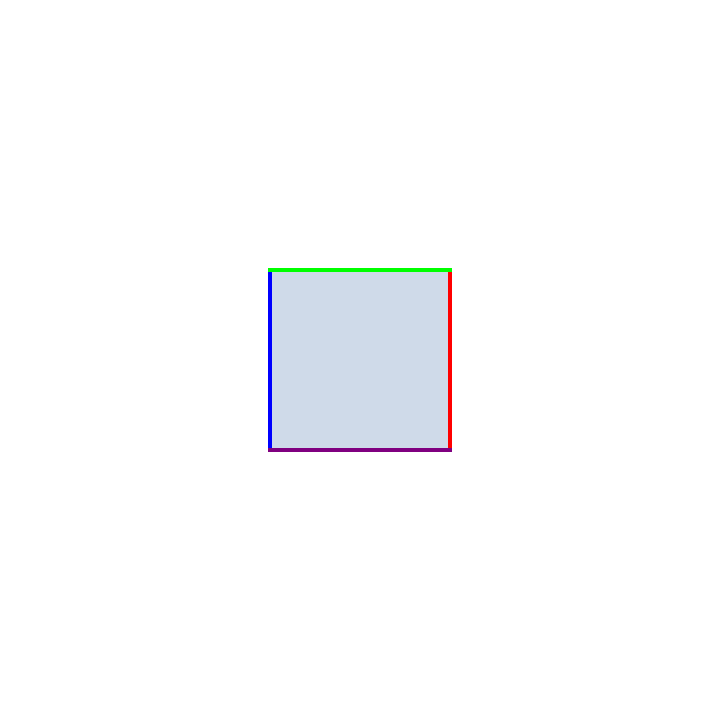
A combination of several projective transformations. The projective group acts very differently from what we are familiar with in Euclidean geometry. Both orientation and angles are lost under these transformations. Nevertheless, these transformations preserve collinearity.
(3,3,7) Triangle Group
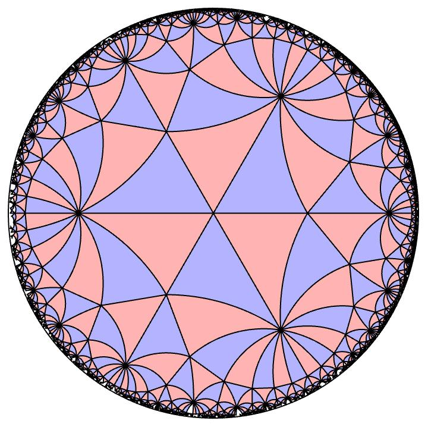
A picture of the $(3,3,7)$ hyperbolic tiling. In the hyperbolic plane, all these triangles have the same area. They have angles $\pi/3$, $\pi/3$, and $\pi/7$. Specifying these angles uniquely determines the triangle up to isometry, unlike in the Euclidean plane. The tiling is generated by reflecting the triangle across all three edges. Blue triangles arise from an even number of reflections, and pink triangles from an odd number.
(5,2,7) Triangle Group
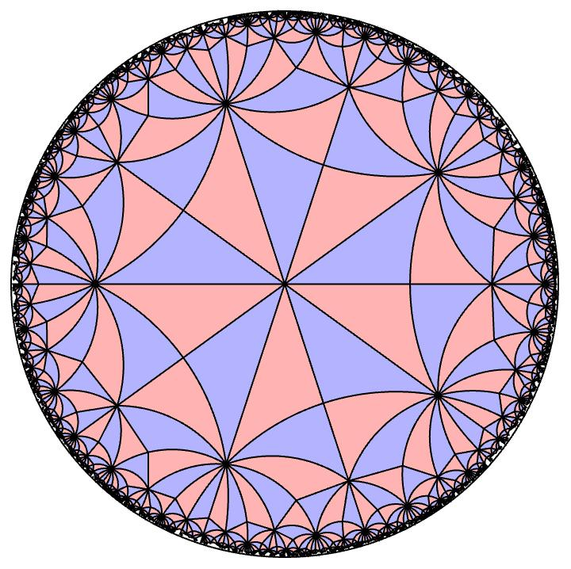
Similar to the previous image, but with angles $\pi/5$, $\pi/2$, and $\pi/7$. Another way to identify this is by looking at the three vertices of a fixed triangle. Around one vertex there are five triangles, around another there are seven, and around the last there are two. This follows from the reflection construction and the requirement that the angle sum around each vertex equal $2\pi$.
(5,5,5) Triangle Group
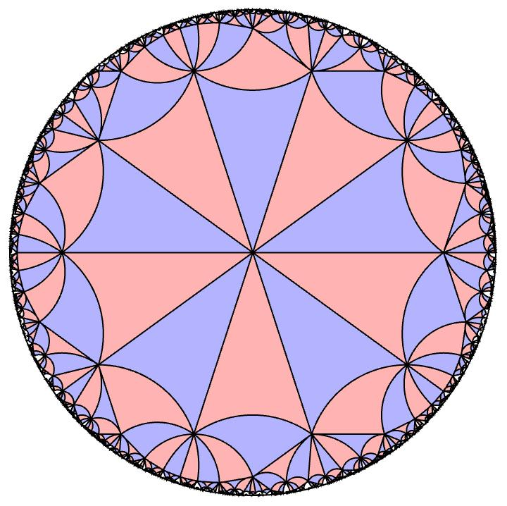
Here is one last example, with five triangles around every vertex. There is a unique triangle for each triple $(n,m,p)$ satisfying $1/m+1/n+1/p<1$. This follows from hyperbolic trigonometry and the hyperbolic Pythagorean theorem. Caroline Series, Sara Maloni, and Khadija Farooq have helpful notes on this. In projective geometry, however, uniqueness fails, and these groups can typically be deformed; see Antonin Lukyanenko's master's thesis.
Indiscrete Similarity Torus
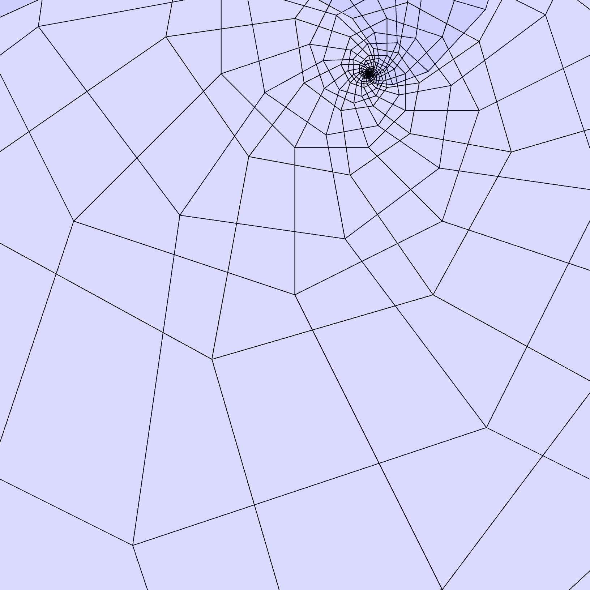
A picture of the developing image of a similarity structure on a torus. It is obtained by taking a quadrilateral and gluing opposite edges by corresponding similarity transformations. The image of the holonomy representation is indiscrete, which means that the picture eventually wraps around itself. You can see this beginning near one o'clock by the “sun,” to borrow Thurston's term.
Very Indiscrete Sim. Torus
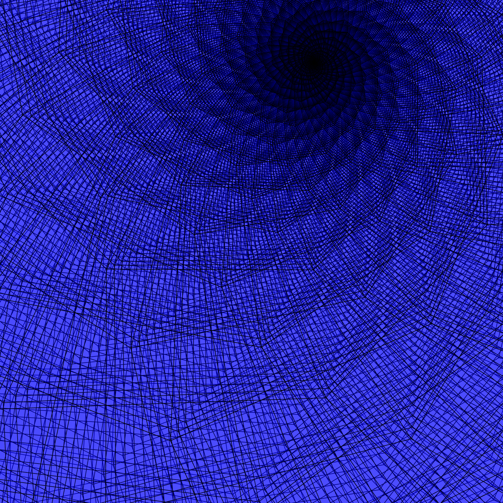
The previous picture, but developed farther. Here one can really appreciate how the holonomy map has indiscrete image inside the group of similarity transformations. This structure is closely related to Thurston's Dehn-filling theorem and corresponds to the situation in which the metric completion of a once-cusped hyperbolic 3-manifold is topologically obtained by adding one point.
Complete Affine Torus
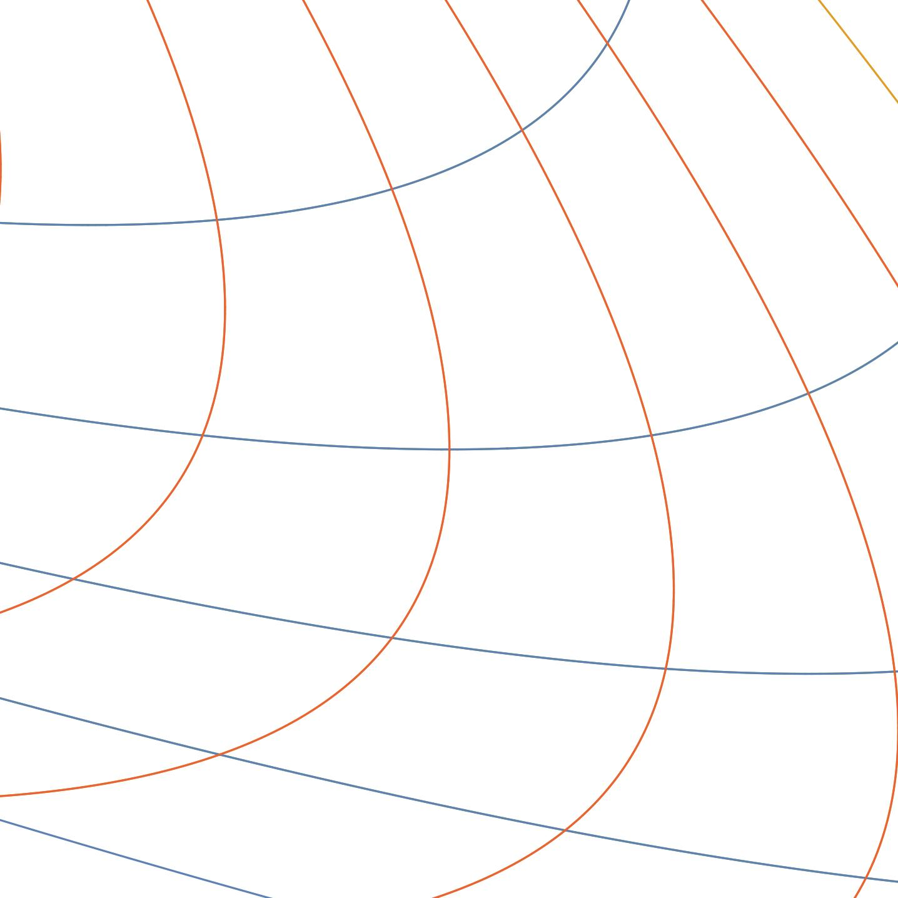
Here is part of a tiling of the plane by regions bounded by two families of parabolas. There are many Euclidean structures on the torus, but there is also a family of inequivalent affine structures. In the affine group, the deformation space of Euclidean structures collapses to a point because all parallelograms are affinely equivalent. Nevertheless, interesting affine deformations remain, and this is one of them.
Foliatation of Affine Torus
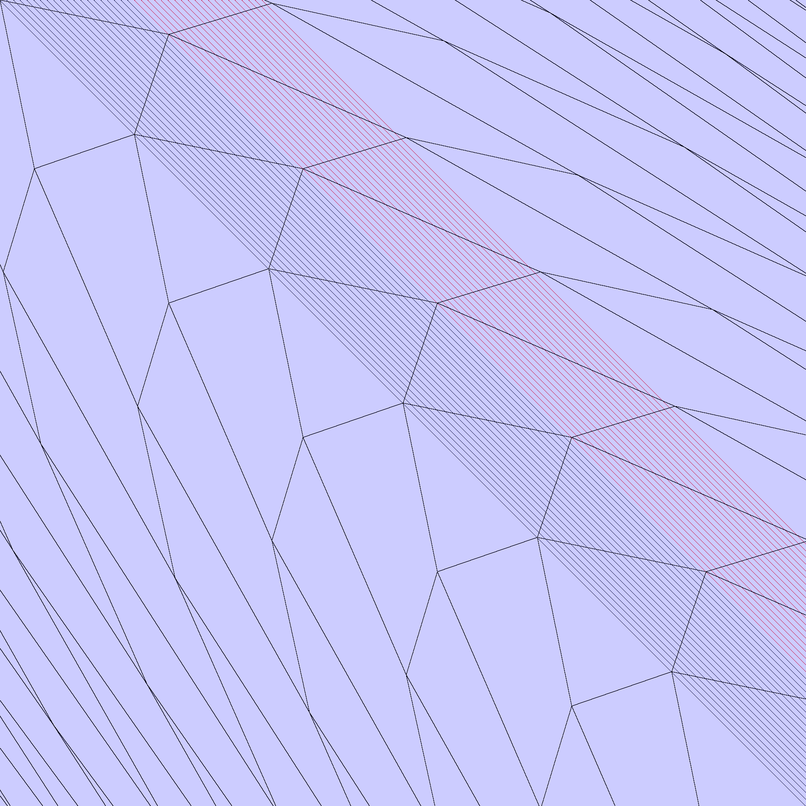
Here is complete affine tiling of the plane by convex quadrilaterals that is non-Euclidean. By work of Baues-Goldman, each of these supports an holonomy invariant oriented foliation. Depicted in black and red are some leaves of the foliation. The edges of the convex quadrilaterals determine the weights of this measured foliation.
Limiting Foliation
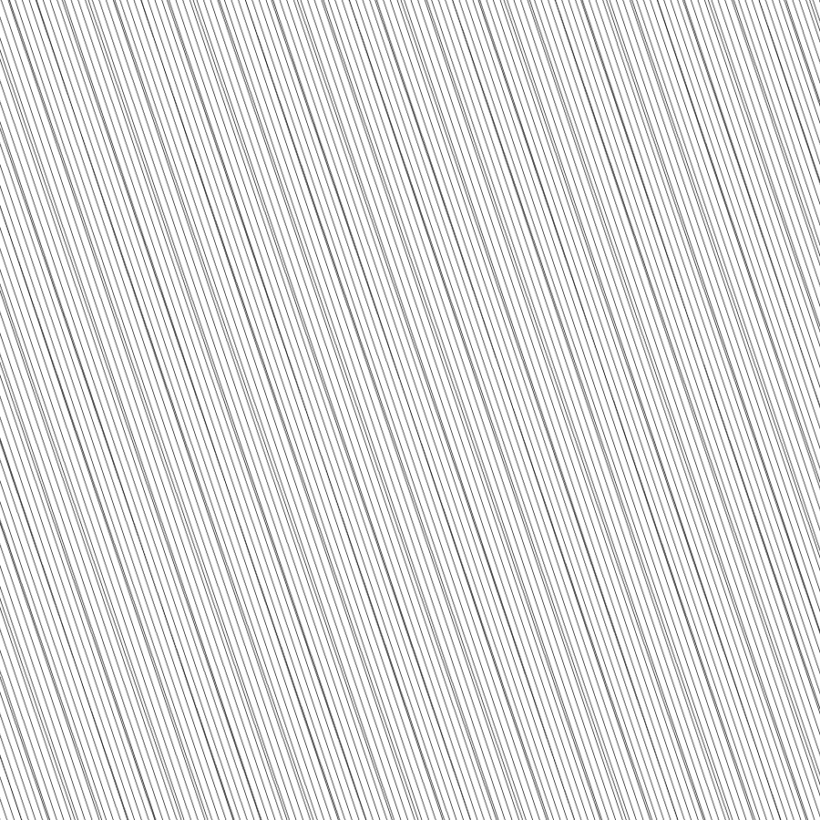
As one moves further out in the tiling, the edges of the convex quadrilaterals become more and more parallel. This image depicts a case where the edges are all almost parallel with the invariant foliation. The tiles become very thin, however, they are all affinely equivalent!
Marked Convex Complete Tiling Subspace
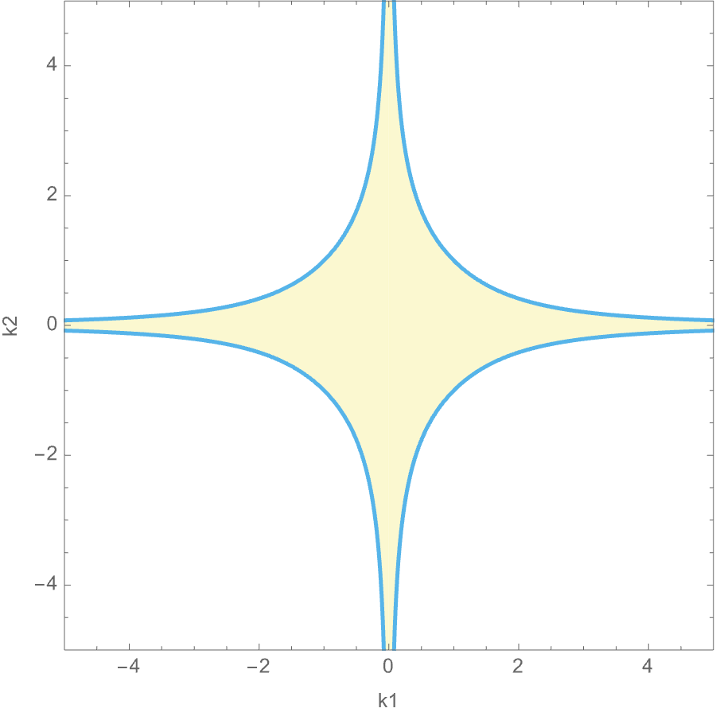
This is what we call the marked convex complete tiling subspace, $\mathcal{MCQ}_{\text{Aff}^{+}}(T^{2})$, of the deformation space of complete affine tori. Unlike the classical flat conformal case, not every marked affine torus admits a convex quadrilateral fundamental domain where the gluings are compatible with the marking. This space depicts those that are. The boundary corresponds to when two edges of the quadrilateral become parallel.
Meandering Number
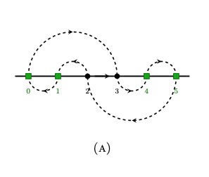
If a cyclic permutation $(\rho_{1}, \ldots, \rho_{n})$ can be realized in the plane as a closed loop intersecting the real axis at the the order of $\rho_{1} < \rho_{2} < \ldots < \rho_{n}$, then we say a permutation is cyclic meanderic. Not every cyclic permutation is cyclic meanderic but one can ask how many points of intersection does one need to add for it to be? Turns out the growth rate of points you need to add is quadratic in the length of the permutation!
Rubik's Cube Groups

Certainly the $2\times 2$-Rubik's cube group is a quotient of the $3\times 3$-one. However, it turns out you can embed this quotient inside the original so that the quotient map is split! Here's a picture sending a move on the $2\times 2$ to its corresponding move in the $3\times 3$!